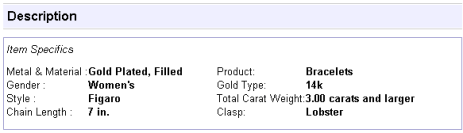
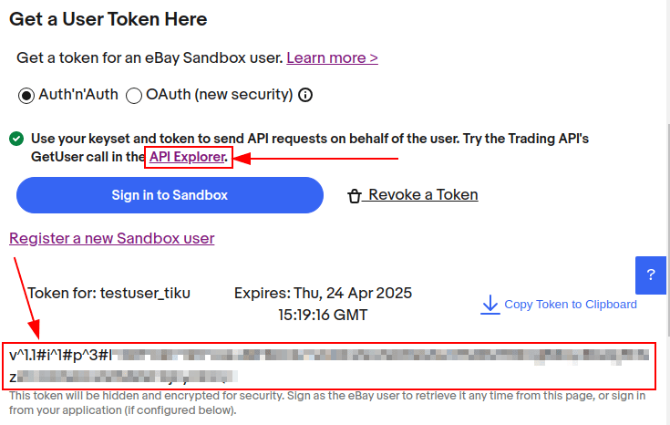

Configuración del Conector de eBay¶
Información general¶
El Conector de eBay de Odoo permite conectar los anuncios de eBay con los productos de Odoo. Una vez conectados podrá realizar actualizaciones a los anuncios desde Odoo o desde eBay. Cuando vende un artículo en eBay, Odoo crea una orden de venta preliminar para que el usuario la revise y confirme. Una vez que la orden de venta esté confirmada, las aplicaciones Inventario y Ventas de Odoo funcionan de manera habitual para tomar productos del inventario y permitir que el usuario cree facturas.
Ver también
Para obtener más información relacionada al Conector de eBay puede visitar las siguientes páginas:
Campos vinculados entre eBay y Odoo¶
Los siguientes son detalles del producto de eBay y cada uno de estos campos en eBay actualiza los campos correspondientes en Odoo.
URL de eBay.
Estado de eBay.
cantidad vendida
Fecha de inicio
Título
Subtítulo
estado del artículo
Categoría
categoría 2
categoría de la tienda
categoría 2 de la tienda
Política de pago
perfil del vendedor
Código postal
Política de envío
Tipo de anuncio (precio fijo o subasta).
Precio inicial de la subasta.
Precio en «Cómpralo ahora»
Importe del precio fijo
Usar la cantidad en existencia
Cantidad en eBay
Duración
Aceptar la mejor oferta
Anuncio privado.
Descripción en eBay.
Imagen del producto en eBay.
País
Términos de eBay.¶
Las variantes agrupan varios productos en uno con distintas opciones de variación. Las variantes pueden sincronizarse con los atributos y valores de Odoo, aparecerán en menús desplegables cerca de la parte superior de la página al ver un anuncio de eBay y son similares a las variantes de productos en Odoo.

Las características del artículo están ubicadas en la parte inferior del anuncio y detallan información específica del producto. Estos detalles no se sincronizan con los campos de Odoo de forma automática, es necesario contar con un desarrollo para vincular estos campos.
Los términos Sandbox y Producción se utilizan para categorizar los entornos de eBay en caso de que se encuentren en desarrollo o pruebas (Sandbox), o para su uso en la instancia real de la base de datos con información y datos de clientes reales (Producción). Lo más recomendable es que primero use Sandbox para realizar pruebas y, luego, con los procesos descritos a continuación, cree una instancia de Producción.
Truco
Puede acceder al entorno de prueba (sandbox) de eBay desde el portal sandbox de eBay en https://sandbox.ebay.com/ y puede acceder al entorno de producción de eBay desde el portal de eBay o desde https://www.ebay.com/.
Importante
La selección de entorno debe permanecer igual para todos los ajustes de entorno en eBay y en Odoo durante la configuración completa.
Acciones de eBay disponibles en Odoo¶
Las siguientes son acciones incorporadas en Odoo que agregan o actualizan anuncios de eBay:
Anunciar y Vincular: genere un nuevo anuncio de eBay con un producto de Odoo al hacer clic en Publicar artículo en eBay o Enlazar a un anuncio vigente de eBay.
Botón Modificar artículo: después de hacer cambios en un anuncio de eBay en Odoo, guarde el registro y luego haga clic en el botón Modificar artículo en Odoo para actualizar el anuncio de eBay.
Volver a publicar: si la publicación de un artículo terminó antes de tiempo o no seleccionó la opción para anunciar de forma automática, el usuario puede volver a anunciar el artículo desde Odoo. La fecha de inicio se restablecerá.
Botón Finalizar el anuncio de un artículo: finalice el anuncio de un artículo desde Odoo.
Desvincular los anuncios de productos: los usuarios pueden desvincular un producto del anuncio de eBay. El anuncio permanecerá intacto en eBay.
Configuración necesaria en Odoo antes de configurar eBay¶
Para vincular eBay con Odoo debe instalar el módulo de eBay. Vaya al tablero de Odoo y haga clic en la aplicación Aplicaciones. Busque el término eBay e instale el módulo Conector de eBay.
Configure los siguientes elementos antes de configurar eBay:
En Odoo deberá crear y configurar los productos que mostrará en eBay, ya que eBay no importa nuevos productos a Odoo. Debe crear todos los productos en Odoo y luego vincularlos a los anuncios.
Odoo no permite que varios anuncios de eBay estén vinculados al mismo producto en Odoo. Si su empresa vende el mismo producto en varios anuncios entonces siga estas instrucciones:
Configure un producto base (en el campo Componente de la lista de materiales) desde el cual se extraerán todos los anuncios de eBay. Este debe ser un producto almacenable del que es posible gestionar las existencias y se incluirá en el kit de cada producto «vinculado». En la siguiente imagen podrá verlo resaltado en verde.
Configure 2 o más productos vinculados (en el campo Producto de la lista de materiales), uno para cada anuncio de eBay. El tipo de producto se determinará según los ajustes contables de la empresa, como se explica en la documentación de Odoo. Cada producto debe tener un Tipo de LdM igual a Kit y tener el producto base como un Componente del kit, en la siguiente imagen podrá ver esto resaltado en amarillo. Cuando este producto de eBay vinculado se vende, la orden de entrega creada tendrá el producto base en lugar del producto vinculado.
Ver también
eBay no crea facturas de forma automática para las órdenes de eBay que se transfieren a Odoo. Establezca la política de facturación en los productos de eBay: la política de facturación determinará cuándo se puede facturar el producto. Dado que la mayoría de los usuarios de eBay reciben los pagos antes de que se envíe el producto, «facturar al ordenar» permitirá que los usuarios creen facturas en lote para las órdenes de eBay a diario.
Establezca la ruta de envíos salientes para el almacén como Entregar productos directamente (1 paso).
Advertencia
Cuando la ruta de envíos salientes está configurada en dos o tres pasos ocurre un error: eBay marca las órdenes erróneamente como entregadas al confirmar la operación de recolección en Odoo. El comportamiento esperado es marcar las órdenes como entregadas después de confirmar la orden de entrega. Este etiquetado incorrecto impide que los números de seguimiento en eBay se importen a la orden de entrega.
Si las aplicaciones Contabilidad o Facturación están instaladas, registre el pago y concilie las facturas creadas a partir de las órdenes de eBay con el respectivo dinero entrante.
Ver también
Genere un token de notificación de cierre o eliminación de cuenta de mercado. Para comenzar, vaya a la . En la sección de eBay cambie el modo a Producción e ingrese valores de texto aleatorios para la Clave de certificado de producción. Luego, haga clic en el botón Generar token en la sección de Notificaciones de eliminación o cierre de la cuenta de eBay Marketplace. Este token se utilizará durante la configuración en eBay para las notificaciones de cierre o de eliminación de la cuenta.

Configuración en eBay¶
Configuración de la cuenta de desarrollador de eBay¶
Para comenzar, cree una cuenta de desarrollador de eBay a través del portal de desarrolladores de eBay. Este sitio requiere un inicio de sesión y una contraseña diferentes a los de la cuenta de eBay, aunque puede utilizar la misma dirección de correo electrónico para registrarse. La verificación para crear una cuenta de desarrollador lleva alrededor de 24 horas.
Configuración del conjunto de claves de eBay¶
Una vez que haya creado la cuenta de desarrollador de eBay, configure una aplicación en el portal de desarrolladores de eBay. Vaya al encabezado Hola, [nombre de usuario] ubicado en la parte superior derecha de la pantalla, después, desde las opciones del menú desplegable, haga clic en Application Keysets (o conjunto de claves). Al realizar esta acción, se abrirá una ventana emergente que solicita al usuario que proporcione el título de la aplicación (puede escribir hasta cincuenta caracteres) y que elija un entorno de desarrollo (Sandbox (entorno de prueba) o Production (producción)). Estos dos campos generan el primer conjunto de claves. El título de esta aplicación no se guarda hasta que genere el conjunto de claves. Haga clic en Create a keyset (crear un conjunto de claves) para generar el conjunto de claves.
Advertencia
De forma predeterminada, el conjunto de claves de producción recién creado está desactivado. Actívelo suscribiéndose a las “notificaciones de eliminación o cierre de cuenta” del mercado de eBay o solicitando una exención a eBay. Una vez que lo haya habilitado, la base de datos puede realizar 5000 llamadas por día con este conjunto de claves.
Configurar la eliminación de la cuenta y los ajustes de notificaciones (en producción)¶
Para configurar notificaciones o eliminar la base de datos en un entorno de producción, vaya al portal de desarrolladores de eBay. Configure la eliminación de cuenta o los ajustes de notificaciones en eBay desde Hola, [nombre de usuario] ubicado en la parte superior derecha de la pantalla, luego Application Keysets.
A continuación, haga clic en la opción Notificación de eliminación o cierre de la cuenta del mercado en la columna de conjunto de claves de producción. Ingrese un correo en Correo electrónico para notificar si el punto extremo de notificación de eliminación de cuenta del marketplace está inactivo. Haga clic en Guardar para habilitar el correo electrónico.
A continuación, ingrese la URL del punto extremo de notificación de eliminación de cuenta de mercado proporcionada por Odoo. Este punto extremo HTTP se encuentra en Odoo, solo vaya a la y luego al campo Notificaciones de eliminación o cierre de la cuenta de eBay Marketplace.
Al hacer clic en el botón Generar token en Odoo, se crea un token de verificación para el entorno de producción de eBay. En Odoo, copie el token recién creado y vaya a eBay para completar el campo Token de verificación. Haga clic en Guardar para habilitar el Método de entrega de notificaciones de eventos.

Después de completar los campos anteriores, haga clic en Enviar notificación de prueba para probar las nuevas notificaciones. Continúe con el siguiente paso cuando aparezca la marca de verificación verde. Vuelva a realizar los ajustes anteriores si la publicación de prueba no resulta como se esperaba.
Después de configurar los ajustes de la notificación, regrese a la página de para generar los conjuntos de claves de producción.
Crear el conjunto de claves¶
Una configuración exitosa de las notificaciones permite la creación de conjuntos de claves de producción que son necesarios para el resto de la configuración de Odoo. Regrese a la página de para generar un conjunto de claves de producción.
El administrador debe . Ingrese o confirme al propietario de la cuenta (la persona legalmente responsable del Acuerdo de licencia de la API de eBay, recuerde que solo está disponible en inglés). Complete los campos Nombre, Apellido, Correo electrónico, Teléfono y luego seleccione Particular o Empresa.
Nota
La dirección de correo electrónico o el número de teléfono proporcionados no tienen que coincidir con los de la cuenta. eBay utiliza esta información para contactar a la empresa o al individuo en caso de que ocurran problemas con los tokens de usuario. Puede agregar contactos adicionales desde la página Perfil y contactos en eBay.
Haga clic en Continuar para crear claves para confirmar el contacto principal. La pantalla Claves de aplicación se completa en una nueva pantalla y se envía un correo electrónico a la cuenta del desarrollador. También se completa ID de la aplicación (ID del cliente), ID del desarrollador y ID del certificado (Secreto del cliente) en automático.

Copie estos valores, será necesario que los escriba en Odoo más adelante.
Crear tokens de usuario en eBay¶
Ahora cree un token de usuario en eBay. Vaya a la sección Hola, [nombre de usuario] que está ubicada en la parte superior derecha de la pantalla, luego vaya a Tokens de acceso del usuario.

Seleccione el entorno correcto: Sandbox para pruebas o Production para la base de datos activa. Mantenga la misma selección para todos los ajustes de entorno tanto en eBay como en Odoo.
A continuación, seleccione el botón de opción etiquetado como Auth’n’Auth.
Elija Iniciar sesión en producción o Iniciar sesión en sandbox para obtener un token de usuario en el entorno seleccionado. Este botón varía según la selección que haya hecho, si fue Sandbox o fue Producción.
Esta acción abrirá una ventana emergente para confirmar su domicilio legal. Complete los campos obligatorios, que son Nombre, Apellido, Correo electrónico principal, Domicilio legal y Tipo de cuenta. Para Tipo de cuenta, seleccione Particular o Empresa. Para completar la confirmación, haga clic en Iniciar sesión en eBay para obtener un token.
Nota
eBay se pondrá en contacto con esta persona o empresa en caso de que ocurra cualquier problema con las claves de la aplicación. Puede agregar otros contactos desde la página de eBay .
El administrador será redirigido a un entorno de prueba o a una página de inicio de sesión de producción para eBay. Este usuario es distinto a la consola del desarrollador de eBay, es la cuenta de eBay donde venderá los artículos. Este correo electrónico o usuario puede diferir de la cuenta de desarrollador de eBay.
Una vez que haya ingresado el correo electrónico o nombre de usuario de su cuenta de eBay, inicie sesión.
Importante
Si necesita de un usuario adicional para la simulación del entorno de prueba (sandbox) deberá crear un usuario de prueba. Visite el formulario de registro para Sandbox de eBay. Puede encontrar instrucciones detalladas en las páginas de ayuda de eBay: Crear un usuario de prueba en Sandbox. Esta información solo está disponible en inglés.
Otorgar acceso a la aplicación¶
Después de iniciar sesión en el entorno de producción o de prueba, eBay le proporciona al administrador un acuerdo para que otorgue acceso a los datos de eBay del usuario.
Al hacer clic en Aceptar permite que eBay vincule la cuenta de eBay con la interfaz de programación de aplicaciones (API). Este acuerdo se puede cambiar en cualquier momento si visita las preferencias de la cuenta de eBay.
Advertencia
eBay cuenta con una secuencia de tiempo entre el inicio de sesión y para aceptar los términos para la vinculación con la API. Una vez terminada, aparecerá un token de usuario en la página de .
En la pantalla aparecerá un token de usuario, asegúrese de copiarlo, pues lo utilizará en los próximos pasos junto con el Conjunto de claves de la aplicación.
Importante
Es necesario iniciar sesión en la cuenta de eBay para crear el token. El desarrollador de eBay también puede revocar el token si hace clic en el enlace Revocar un token.
API explorer¶
Una vez que creó el conjunto de claves de la aplicación y el token de usuario puede realizar una prueba a través de API Explorer para asegurarse de que la API está configurada de forma correcta. Esta prueba ejecutará una búsqueda simple con la API.
Para comenzar con la prueba de la API, haga clic en Obtener token de aplicación OAuth. Esta acción completará la clave en el campo Token.
Una función de búsqueda básica está configurada, solo haga clic en Ejecutar para completar la prueba. Una prueba exitosa proporcionará el código de respuesta con los valores 200 OK junto con el tiempo correspondiente.
Proporcionar las credenciales en Odoo¶
Ahora puede ingresar el token de usuario y el conjunto de claves de la aplicación que había copiado con anterioridad en la base de datos de Odoo.
Regrese a los ajustes de eBay en Odoo () y pegue las siguientes credenciales de eBay en los campos correspondientes en Odoo.
Platforma. |
ID o clave de desarrollador |
Token |
ID o clave de la aplicación |
ID o clave del certificado |
|---|---|---|---|---|
eBay |
ID de desarrollador |
Token de usuario |
ID de la aplicación (ID del cliente) |
ID del certificado (Secreto del cliente) |
Odoo |
Clave de desarrollador |
Token de producción o del entorno de prueba |
Clave de la aplicación de producción o del entorno de prueba |
Clave del certificado de producción o del entorno de prueba |
Importante
Puede acceder al conjunto de claves de la aplicación desde el portal de desarrolladores de eBay. Una vez allí, vaya a Hola, [nombre de usuario] en la parte superior derecha de la pantalla y haga clic en Conjuntos de claves de la aplicación. Para acceder al token de usuario en eBay, diríjase a Hola, [nombre de usuario] ubicado en la parte superior derecha de la pantalla, después vaya a Tokens de acceso de usuario y haga clic en Iniciar sesión en Sandbox. También puede acceder si hace clic en Tokens de usuario desde la página .
Guarde las credenciales en Odoo para confirmar que la configuración es correcta. Una vez que haya terminado con la configuración inicial, aparecerá una nueva pestaña de menú en los productos llamada eBay con la opción Vender en eBay. Consulte ¿Cómo anunciar un producto? para obtener más detalles sobre cómo anunciar productos.
Truco
Haga clic en Categorías de productos para sincronizar las categorías de productos. Luego de la sincronización aparecerá un nuevo elemento de menú, Categoría de eBay, disponible para configurar los productos. Estas categorías de eBay se importan de la base de datos de Odoo y están disponibles al anunciar un artículo en eBay a través de Odoo.
Importante
Si es necesario tener categorías de productos con más de cuatro rutas, entonces los usuarios deben agregarlas manualmente. Estas se pueden importar de forma manual en el modelo de Categoría de producto en Odoo y luego se deben vincular individualmente al producto.
Ver también
Ahora que terminó con la configuración tiene dos opciones: